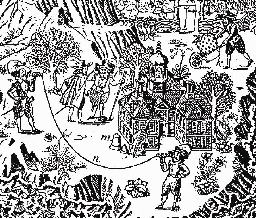

Welcome to New Atlantis web POC v0.10!
New Atlantis is a shared (multi-user) online virtual world dedicated to audio experimentation and practice. Unlike most online worlds where image is the primary concern, in New Atlantis sound comes first.
New Atlantis provides a context for new-media students to showcase research projects that explore the relationship between sound, virtual 3D image and interactivity. It offers a pedagogical platform for audiographic animation, real-time sound synthesis, object sonification and acoustic simulation. It is a place to organize virtual sound installations, online concerts, soundwalks and other audio visual art experiences.
The webcam will be used to take a picture of you and texture your avatar.
--arrows to move around, hold shift to move faster--
--click and drag to look around or to move an object, backspace to delete it--
--backpack UI in the top right corner--